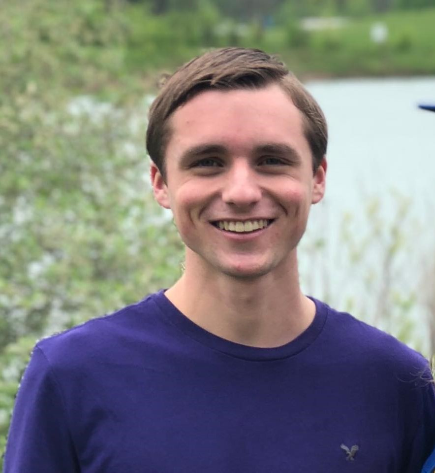

About Me

Hello, and welcome to my travel blog site! My name's Austin, and I am a junior computer science major at UNC-Chapel Hill. For three weeks, I will be located in the beautiful city of Copenhagen as part of a study abroad program.
To give some insight about my background at UNC, I've worked as a Learning Assistant for COMP 401 as well as a Research Assistant for enabling technologies. I am involved in a few clubs at UNC, including DevApp and Buckley Public Service Scholars. The one that I cherish the most is the Enabling Technology Club where I serve as the Vice President and Treasurer. Our goal is to promote the creation and use of technology for individuals with disabilities.
This summer, I will be working as a JMP Technical Intern at SAS to update scripts for the documentation team's software. I'm excited to start this position as soon as I return to Chapel Hill from Copenhagen.
With prior web dev experience, I can't wait to learn more about the interactive components of a website that are not visible to users. Some of my previous projects include the following sites:
- • austinbhale.com
- • sydneybhale.com
- • edwardtrentzsch.github.io
- • hacknc.com (navigation)
Although I have never traveled outside of the country, I am confident that Copenhagen will be an amazing trip. By learning more about Scandinavian culture and web development, I plan to take these experiences and apply them to everyday life back home.